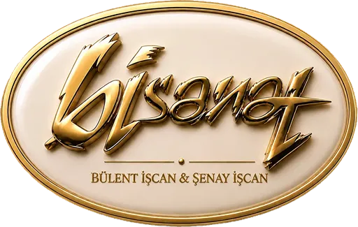

Görsel eklenmedi

Bisanat Atölyesi'nde her eser, geçmişi bugünün izleyicisiyle buluşturan bütünsel bir sanat anlayışıyla hayat bulur.
Hiperrealist heykel, tarihsel canlandırma ve sanat yönetimini bir araya getirerek geçmişin insanlarını, yaşamlarını ve kültürel mirasını gerçeğe en yakın biçimde yeniden canlandırıyoruz.
Her projemiz titiz bir tarihsel araştırmayla başlar. Karakterden kostüme, mekândan atmosfere kadar her ayrıntı, aynı hikâyenin parçası olarak ele alınır ve sanatsal bir bütünlük içinde tasarlanır.
Amacımız geçmişi yalnızca göstermek değil; izleyicinin kendisini o anın içinde hissedebileceği, tarihle güçlü ve insani bir bağ kurabileceği deneyimler yaratmaktır.
Geçmişi bugüne taşıyor, tarihi yeniden görünür kılıyoruz.
Bülent İşcan'ın sanatının merkezinde insan vardır. Bir yüzün karakteri, yaşanmışlığın bıraktığı izler, zamanın bedendeki sessiz varlığı… İşcan için bir yüzü heykelde yeniden görünür kılmak; onun yalnızca görünüşünü değil, yaşadığı zamanı, karakterini ve ardında bıraktığı belleği bugüne taşımaktır.
İşcan, insan figürünü yalnızca biçimsel bir gerçeklik olarak değil; kimlik, karakter ve belleğin taşıyıcısı olarak ele alır. Heykel onun için görünüşün ötesine geçmenin, insanın varlığını ve yaşadığı zamanla kurduğu bağı araştırmanın bir yoludur. Her eser, gözlem ile sanatsal yorumun buluştuğu özgün bir anlatıya dönüşür.
Hiperrealizm, İşcan'ın sanatında bir amaç değil, insana ulaşmanın sanatsal dilidir. Cildin dokusu, bakışın derinliği, yüzün ince izleri ve karaktere özgü ayrıntılar; yalnızca görünüşü aktarmak için değil, o insanın varlığını ve yaşanmışlığını hissettirmek için bir araya gelir.
Özellikle tarihsel kişilikleri ele alan çalışmalarında İşcan, tarihin içindeki insanı yeniden görünür kılar. Uzak bir döneme ait figür, heykel aracılığıyla bugünün izleyicisiyle karşılaşır; bireysel bir yaşam, ortak belleğin parçasına dönüşür.
İzleyici artık yalnızca bir figüre bakmaz; başka bir zamana, başka bir yaşama ve o yaşamın bıraktığı izlere tanıklık eder.
Sanat ile gerçek arasındaki sınırın belirsizleştiği o anda, hiperrealizm kendi görünürlüğünden çekilir ve geriye insan kalır.
Yirmi yılı aşkın atölye üretiminin tamamı: yurt dışı müze projeleri, yurt içi müze çalışmaları ve sinema / dizi / reklam dekor-aksesuar işleri.
Eserlerimizin sergilendiği müzeler, saraylar ve tarihî alanlar harita üzerinde — şehir şehir, müze müze.
Canlandırdığımız tarihî kişilikler; kim olduklarını, hangi eserlerimizde yer aldıklarını ve nerede görülebileceklerini tek tek inceleyin.
2012'den bu yana Türkiye sınırlarının ötesinde: Körfez'den Uzak Doğu'ya, Balkanlar'dan Avrupa'ya.
Yurt içi müze projeleri yıllara göre; sinema, dizi ve reklam dekor/aksesuar çalışmaları aşağıda.
Yirmi yılı aşkın süredir sinema, TV, reklam, fotoğraf ve sahne sektörüne üretilen dekor ve aksesuar çalışmalarının tam listesi — yıl, proje, yönetmen ve yapımcı bilgileriyle.
Bir sonraki eseri birlikte kuralım.